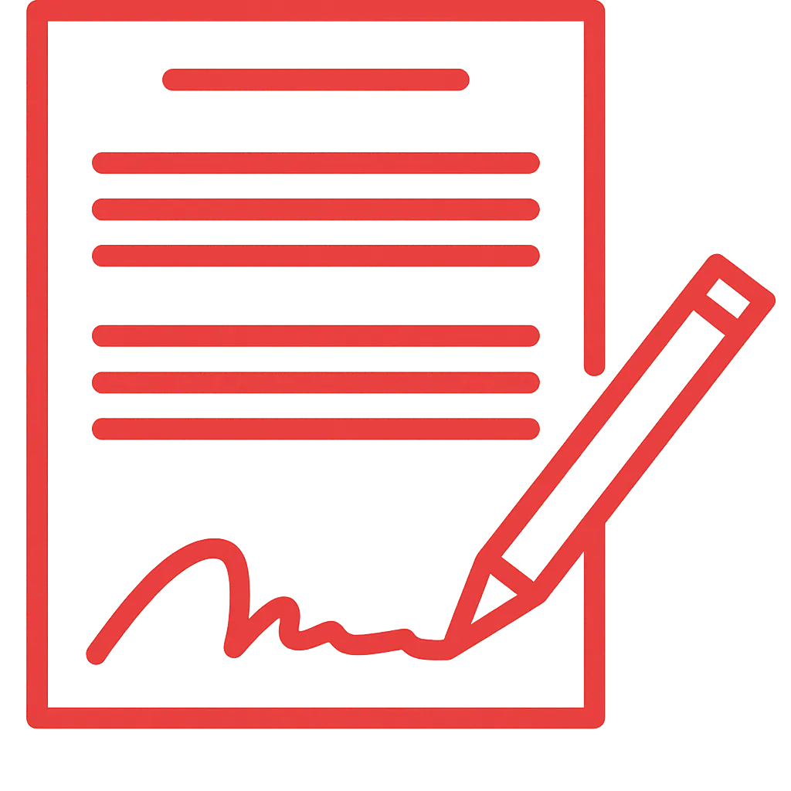
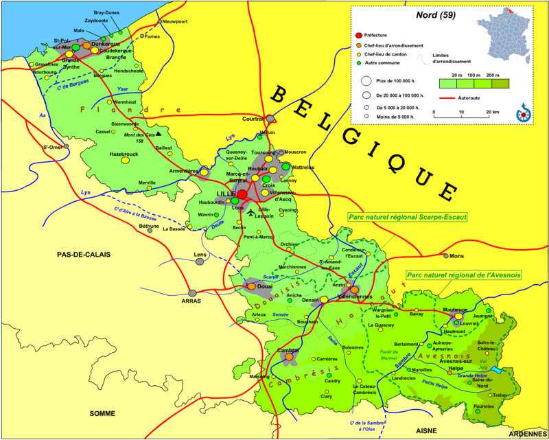

Cordiste 59
Travaux sur Corde
59 Nord
NOS SERVICES

Redonnez éclat et transparence à vos vitrages grâce à notre service de nettoyage en hauteur. Cette intervention supprime efficacement salissures et traces, même sur les surfaces les plus difficiles d’accès. Nos cordistes assurent un rendu impeccable, rapide et sécurisé.
CONTACTEZ - NOUS
RAVALEMENT – Maçonnerie & Peinture
Réhabilitez vos façades en hauteur sans échafaudage avec Quali-corde nord. Nos cordistes qualifiés réalisent vos travaux de ravalement, maçonnerie et peinture en zones difficiles d’accès. Des interventions rapides, discrètes et fiables, adaptées aux façades urbaines et aux chantiers complexes.
CONTACTEZ - NOUSINDUSTRIE (silos & maintenance)
Sécurité. Réactivité. Fiabilité. Nous intervenons en hauteur et en zones complexes pour l’entretien, la maintenance et l’inspection de vos silos et équipements industriels. Grâce à notre expertise en travaux sur cordes, nous garantissons des prestations rapides, sécurisées et sans interruption de votre activité.
CONTACTEZ - NOUS
SÉCURITÉ – Lignes de vie & Filets
Sécurisez vos ouvrages et protégez vos équipes. Nous fournissons et posons des lignes de vie, points d’ancrage, filets de sécurité et systèmes antichute. Des solutions conformes aux normes en vigueur, adaptées à tout type de structure, en construction comme en rénovation.
CONTACTEZ - NOUSURGENCE – Purge, Bâchage & Filets
Intervention immédiate pour sécuriser vos bâtiments. Chutes de matériaux, intempéries, sinistres : nos équipes interviennent rapidement pour la purge, le bâchage et la pose de filets. Grâce à notre réactivité et notre savoir-faire, vos sites sont protégés en un temps record. Sécurisez sans attendre, nous agissons instantanément.
CONTACTEZ - NOUSÉVÉNEMENTIEL – Enseignes & Animations
Installation en hauteur sur-mesure pour une visibilité optimale. Nous posons vos enseignes, banderoles, éléments scéniques ou animations, même dans les environnements complexes. Nos cordistes assurent sécurité, efficacité et discrétion pour valoriser vos événements. Marquez vos clients en toute sérénité.
CONTACTEZ - NOUSANTI-NUISIBLE – Pics & Filets de protection
Protection efficace et discrète contre les nuisibles. Nous installons pics anti-pigeons, filets et autres dispositifs pour préserver vos bâtiments. Des solutions rapides, sans échafaudage, durables et esthétiques pour vos façades.
CONTACTEZ - NOUSAUTRES – Éolien, Soudure, Électricité...
Polyvalence technique pour vos interventions spécifiques. Nos cordistes spécialisés prennent en charge vos projets particuliers : éoliennes, soudures, maintenance électrique, réglage de phares et autres missions complexes. Prestations sur-mesure, sécurisées et fiables pour vos besoins exigeants.
CONTACTEZ - NOUSFaites appel à nos cordistes en cas d’urgence en hauteur. Nous intervenons rapidement pour sécuriser, dépanner ou résoudre toute situation délicate, même dans les zones les plus difficiles d’accès. Nos équipes spécialisées garantissent efficacité, sécurité et réactivité.
CONTACTEZ - NOUSINDUSTRIE (silos & maintenance) : Sécurité. Réactivité. Fiabilité. Nous intervenons en hauteur et dans les zones difficiles d’accès pour l’entretien, la maintenance et l’inspection de vos silos et équipements industriels. Grâce à notre savoir-faire en travaux sur cordes, nous assurons des prestations rapides et sécurisées, sans gêner votre activité.
Installation de SÉCURITÉ – Lignes de vie & Filets : Sécurisez vos ouvrages et protégez vos équipes. Nous assurons la fourniture et la pose de lignes de vie, points d’ancrage, filets de sécurité et systèmes antichute conformes aux normes, adaptés à toutes les structures.
Nettoyage de vitres en hauteur : Profitez de vitres impeccables, même dans les zones les plus complexes. Nos cordistes interviennent dans tout le département du Nord pour un résultat rapide, sûr et irréprochable.
RAVALEMENT – Maçonnerie & Peinture : Rénovez vos façades en hauteur avec Quali-corde nord. Nos cordistes qualifiés prennent en charge ravalement, peinture et maçonnerie sur zones difficiles d’accès. Des interventions rapides, discrètes et professionnelles pour valoriser vos bâtiments.
URGENCE – Purge, Bâchage & Filets : Intervention immédiate, sécurisation rapide. En cas de chute de matériaux, intempéries ou sinistres, nos cordistes assurent la purge, le bâchage et la pose de filets en urgence. Protégez vos bâtiments instantanément.
ÉVÉNEMENTIEL – Enseignes & Animations : Installation sur-mesure et visibilité maximale. Nous posons vos enseignes, banderoles et éléments événementiels en hauteur, même dans les zones complexes. Sécurité, efficacité et discrétion pour valoriser vos événements.
ANTI-NUISIBLE – Pics & Filets de protection : Prévention efficace et discrète. Nous installons pics et filets pour protéger vos bâtiments des nuisibles, avec des solutions durables, esthétiques et rapides à mettre en œuvre.
AUTRES – Éolien, Soudure, Électricité... : Polyvalence et savoir-faire en hauteur. Nos cordistes interviennent sur vos équipements spécifiques : éoliennes, soudures, installations électriques, phares et autres structures. Des prestations personnalisées, sécurisées et fiables.
Urgence cordiste : Besoin d’une intervention rapide en hauteur ? Nos cordistes qualifiés interviennent dans tout le département du Nord pour assurer sécurité et efficacité, même dans les situations les plus délicates.
UNE ÉQUIPE DE CORDISTES EXPÉRIMENTÉS ET UN MATÉRIEL SPÉCIALISÉ
Notre société s’appuie sur des cordistes qualifiés et un matériel de dernière génération. Nous intervenons sur tous types de bâtiments, même les plus difficiles d’accès, pour diverses prestations : maintenance industrielle, installation de dispositifs de sécurité, nettoyage de vitres et façades, ravalement, peinture extérieure, sécurisation de toitures, interventions d’urgence, pose d’enseignes et travaux spécifiques comme la maintenance d’éoliennes ou la soudure en hauteur. Grâce à notre expertise et à nos techniques d’accès par corde, nous assurons des interventions rapides, sûres et conformes aux normes.
DES TARIFS
ADAPTÉS À VOS PROJETS
Nos prestations en hauteur offrent un excellent rapport qualité-prix. Qu’il s’agisse de nettoyage, peinture ou sécurisation, nous garantissons des services professionnels à des prix compétitifs. Demandez dès maintenant votre devis gratuit pour une offre claire et sans engagement.
DEVIS GRATUITPOURQUOI CHOISIR Quali-corde DANS LE NORD ?
En sollicitant Cordiste 59, vous bénéficiez de l’expérience d’une équipe passionnée, réactive et rigoureuse. Reconnus dans tout le département pour notre expertise en travaux en hauteur, nous assurons chaque mission avec sérieux, qu’il s’agisse de nettoyage de façades, de peinture, d’entretien de vitres ou de sécurisation de toitures. Du diagnostic à la finition, nous vous accompagnons avec professionnalisme et transparence.
DES CONTRATS FLEXIBLES POUR UNE TRANQUILLITÉ DURABLE
INTERVENTIONS PONCTUELLES
ENTRETIEN RÉGULIER
Nos contrats personnalisés vous garantissent sérénité et maîtrise totale de vos besoins. Avec Cordiste 59, chaque prestation inclut un engagement clair sur tarifs, délais et qualité. Que ce soit pour une mission ponctuelle ou un suivi régulier, nous proposons des solutions fiables et adaptées à vos contraintes.
NOTRE ZONE D’INTERVENTION DANS LE NORD

Cordiste 59 intervient dans tout le département du Nord ainsi que dans les communes voisines.
Pour une urgence ou une mission planifiée, nos cordistes se déplacent rapidement pour vos travaux en hauteur
(nettoyage, peinture, sécurisation, etc.).
Contactez-nous au 03 20 84 34 65 ou via notre
formulaire pour obtenir un devis gratuit.
Nous intervenons notamment à :
Villeneuve-d'Ascq –
Lezennes –
Mons-en-Barœul –
Forest-sur-Marque –
Tressin –
Anstaing –
Sainghin-en-Mélantois –
Hem –
Chéreng –
Lesquin –
Marcq-en-Barœul –
Croix –
Ronchin –
La Madeleine –
Faches-Thumesnil –
Sailly-lez-Lannoy –
Willems –
Seclin –
Roubaix –
Wattrelos –
Lille
VOTRE PARTENAIRE DE CONFIANCE POUR LES TRAVAUX EN HAUTEUR
Cordiste 59, expert reconnu dans le Nord, prend en charge tous vos travaux en hauteur, en urgence comme sur rendez-vous. Nous accompagnons particuliers et professionnels avec des prestations transparentes, encadrées et sans surprise.
Nous intervenons sur les zones difficiles d’accès pour des missions de nettoyage, peinture, sécurisation de toitures ou installation de lignes de vie. Nos équipes utilisent les techniques d’accès par corde pour atteindre les endroits inaccessibles aux nacelles.
Disponible 7j/7 et 24h/24, y compris jours fériés, Cordiste 59 garantit des interventions rapides, sécurisées et conformes aux normes. Nous assurons aussi bien des missions ponctuelles que des contrats d’entretien régulier.